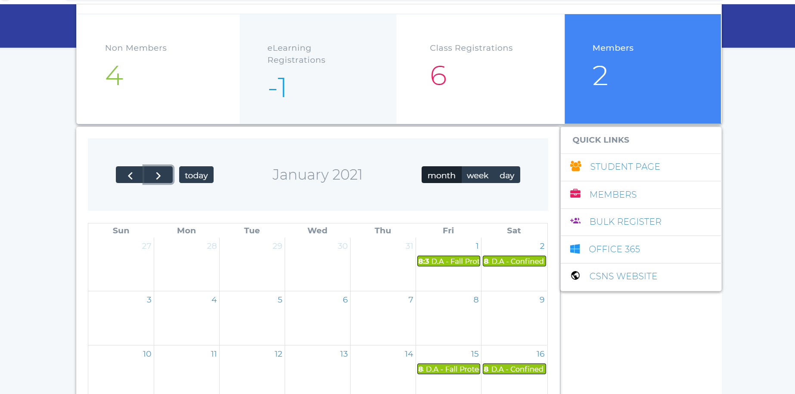
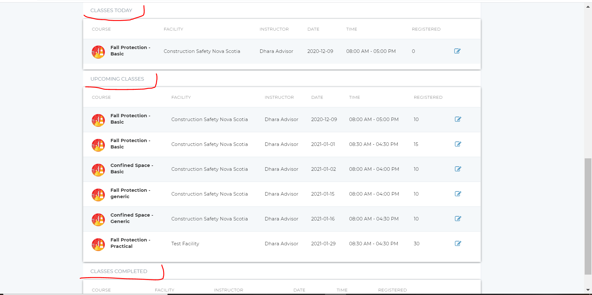
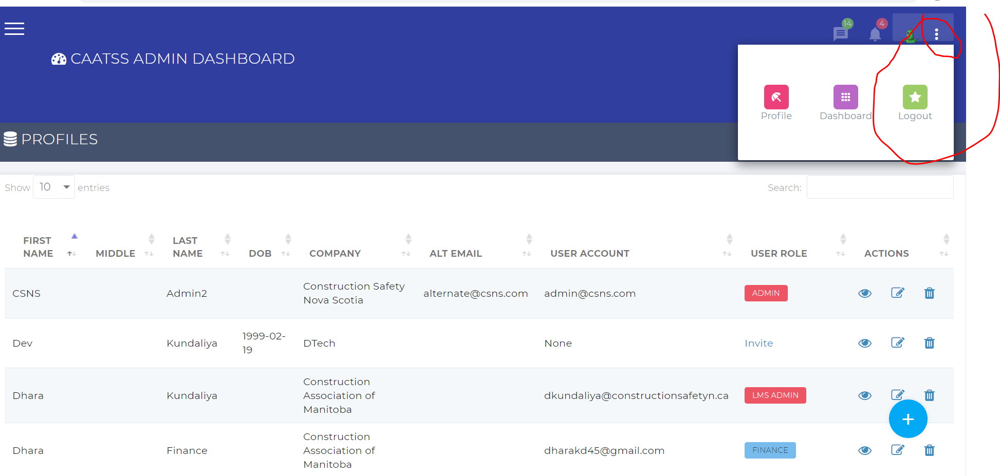

When you log into the system, you will see courses page. Please click on the FAQs to know more about browse courses and other students functionalities
Admin Dashboard
- Login to the system and hover over the admin menu as shown in the below picture. You will see the home option, click on the home option to navigate to the admin dashboard.
-
You will see the quick links on the admin dashboard based on your user role. On the admin dashboad, you will see the calendar and all the scheduled classes. When you hover over the class list, you can see the class details.
When you click on the class list on the calendar:
- Users with LMS admin role will be redirected to the list of registered students page and from that you can process the completed class, unregister students and lot more. Click on the classes for more information.
- Advisors can also click on the class list, but they will be redirected to the process completed class page to process the class.
- Users with other roles will not be able to click on the class list. if the class is clickable than also the system will give the access denied error.

- Below the calendar there is a list of upcoming classes. All the users will see the list of upcoming classes below the calendar.
Only users with the advisor role will see classes assigned to them: 1] Today 2] upcoming 3] completed as shown in the below image.

How to navigate to access different pages??
This section explains the basic navigation. You will see different pages based on your user role. For example:
- LMS admin will see all courses and members related pages like how to create company, profiles, classes, etc.
- The finance admin will only see the finance related things like member billing or payment history etc.
- If you require access to other pages that you don't see on the admin menu, contact system admin and/or techsupport for the CAATSS.
- Click on the menu from the admin dashboard as shown in the below picture.
- This will open the admin side menu and you will see diffrent pages based on your user role. This section displays the side menu for LMS admin.
When you click on the side menu as an lms admin, you will see the company, profiles, eLearning courses, Instructor-led courses, classes, etc. Refer to the below image.
How can I navigate to the list pages of different functionalities like company, profiles, etc??
- From the admin side menu, click on the link you want to access. This section explains the list page of companies. When you click on the link, you will be redirected to the companies page as shown in the below image.
- All the list pages will show few columns. One of the column is the Actions column.
- The links under the actions column will be different based on the page you are on.
How to create anything?
If you want to create a company or any other things, navigate to the list pages of that page.
From the list page, click on the + icon as shown in the below picture.
When you click on the create/edit button, the system wil validate the data, check if the requireds have value in it. If the system finds that the data is invalid or the field that requires unique value has the value that alreayd exists, or the required fields are empty, the system will display an error message.
How to edit details??
From the list of {"Page you want to edit"} click on the edit icon present under the actions column.
Update the details and click on the update button as shown in the below image. if you wish to not update the details and go back to the list page, click on the back button and it will redirect you to the list page.
Make sure you don't leave the required fields empty. The system will displau the missing required fields error. If you find any other errors that is confusing or you don't know how to solve, contact the techsupport for CAATSS.
How to view details??
From the list of {"Page you want to edit"} click on the View icon present under the actions column.
From the view page, you can view the details as well as there is two button to edit and to go back to the list page.
When can i delete the records??
If the record you want to delete has any other child records that requires this parent record to be not deleted, the system will not show the delete icon at all.
In some cases, you will see the delete icon, but when you click on it, it will say "Record can't be deleted" or something like that. If you still want to delete the record and don't see the delete icon or you get the error message while deleting, contact the techsuport for CAATSS.
Search functionalities
Every main list pages have a search box. You can search/filter for anything related to that page using the search box.
For example, you want to search for all the profiles based on a company then go to the profiles list page and search for the company, it will display all the profiles related to that company.
How to logout of the system??
Click on th three vertical dot line on the top right of the page as shown in the picture. It will display three links. Click on the logout link to logout from the system
You can also logout from the browse courses page. (It is the page that you will see when you first login with the course cards)

- Profiles: The profile link will open the My user account page. You can change your password and email address from this page.

- Dashboard: This link will redirect you to the admin dashboard. You can also redirect to the admin dashboard using the home button as shown in the below image.